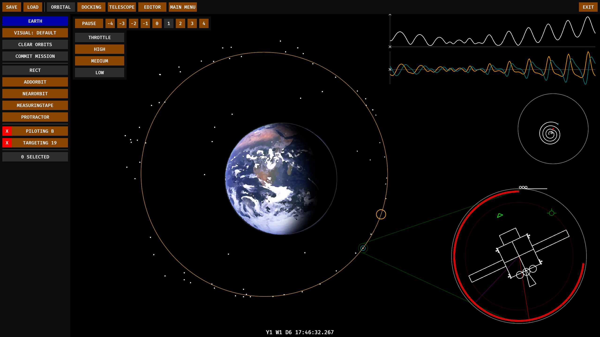
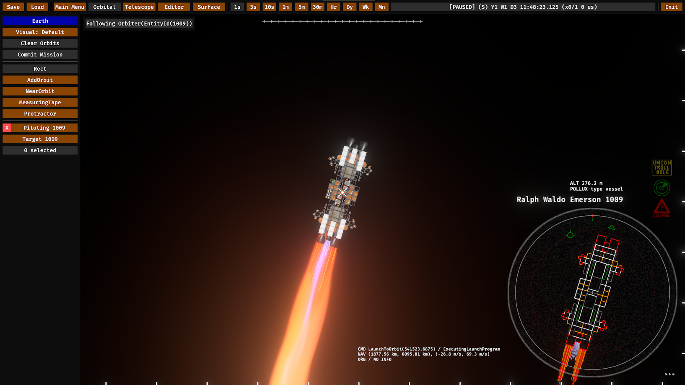
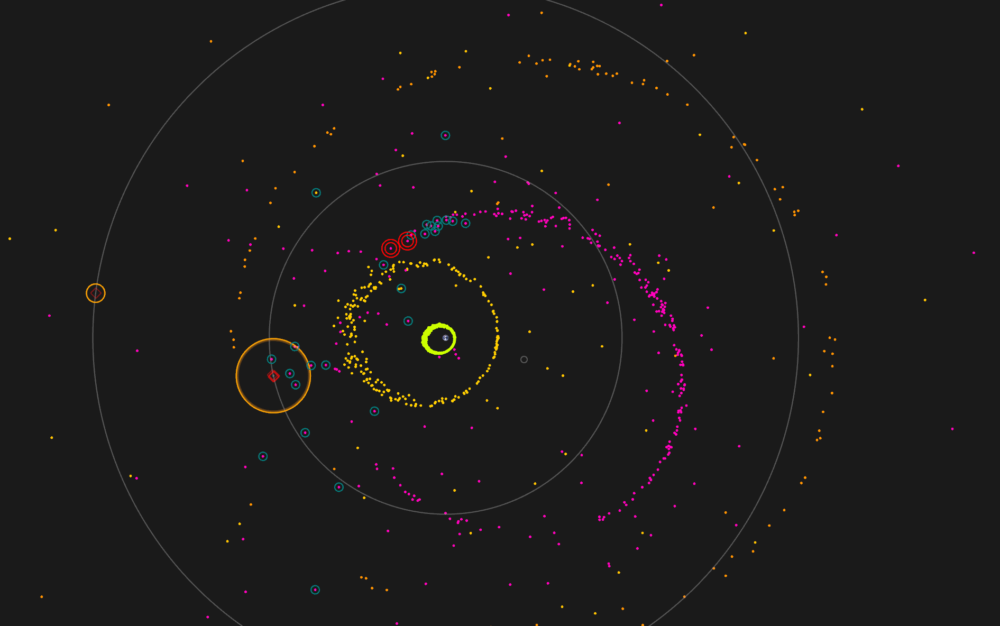
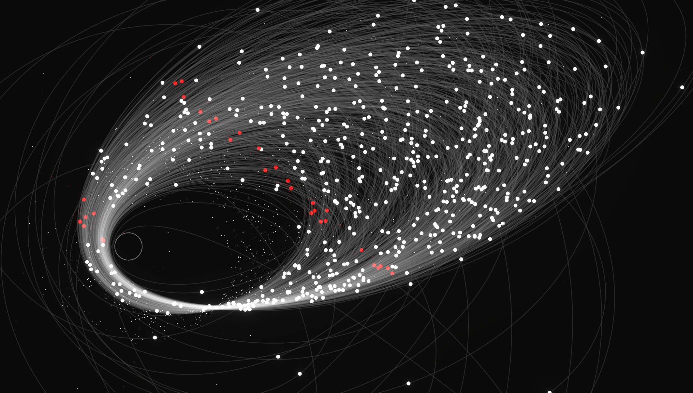
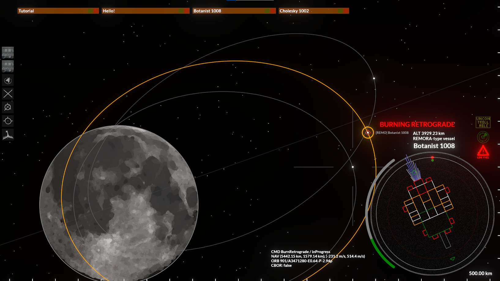
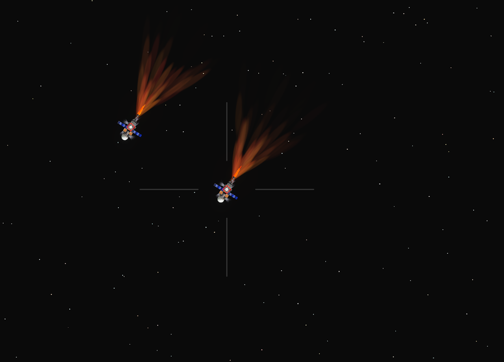

Projects
Orbits
"Orbits" (working title) is a game I'm developing in my free time. The thesis of the game is that orbital mechanics and orbital assembly are fun, and collecting resources around the solar system to build spacecraft would be very fun.
It is written entirely in Rust, and uses Bevy 0.17 for the game engine and render pipeline.
The source code can be found here.
It simulates flocks of spacecraft using two-dimensional Keplerian orbits with patched conics. Players will start with a modest spacecraft, prospect and mine resources from asteroids and planets, and construct infrastructure to build larger vehicles to go farther into the solar system and beyond.

A rendezvous scenario between two spacecraft. Relative positions and velocities are drawn above the outline of the ownship.
A vehicle autonomously launching from the surface of Luna to Low Lunar Orbit.
A collection of vehicles hovering over a planetary surface. The vehicles are modelled as rigid bodies with masses and moments of inertia based on their part composition.
A flock of spacecraft colored by their constellation.
The vehicle editor. Thrusters are functional and have different levels of thrust and specific impulse. This ship is dotted with RCS thrusters for attitude control.
Tasking a constellation of satellites to insert into a different orbit. The vehicles dynamically compute maneuvers to move from their current orbit into the target orbit using a Hohmann transfer.
A really messy-looking test of ray-casted planetary shadows.
A smaller vehicle burning retrograde around Luna.
Two vehicles flying next to each other.